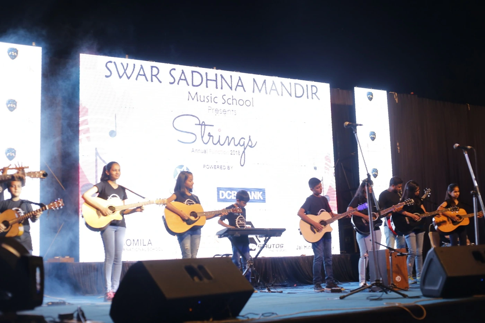

Guitar


I’ve practised guitar for ten years, playing electric and acoustic guitar in school ensembles, alongside instruments such as the sarangi, and as lead guitarist at annual day. Encouraged by my teacher, Kuldeepak Sir, I began teaching other students and later carried that experience into Musica Universalis.